Mantén la huella
Pon el dedo sobre la huella y haz tu pregunta en voz alta.
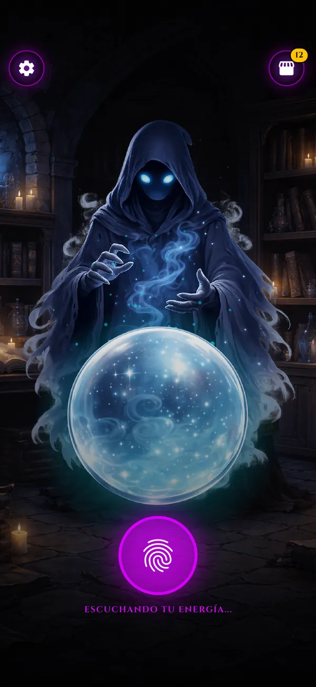
The Mystic Oracle
Mantén la huella, haz tu pregunta y suelta. AMON escucha, medita y te revela su respuesta. Desbloquea 10 entes con personalidad propia —del pirata al gato que solo quiere atún— y comparte tu profecía.
Gratis, con anuncios y compras opcionales. Solo para entretenimiento: las respuestas son al azar.
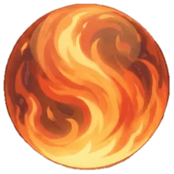
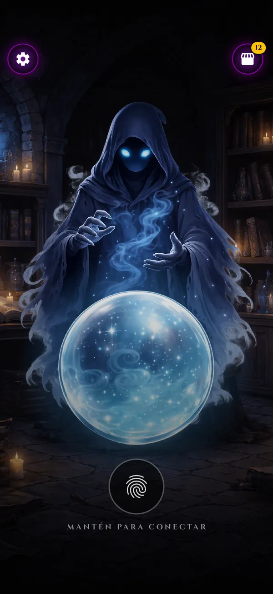
El ritual
Tu pregunta se pasa a texto con el reconocimiento de voz de tu teléfono. No se graba ni se guarda.
Pon el dedo sobre la huella y haz tu pregunta en voz alta.

El oráculo medita unos segundos y revela su respuesta en la bola.

Crea una imagen con tu pregunta y la respuesta para WhatsApp, Instagram o donde quieras.
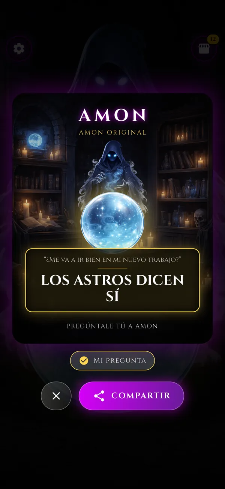
Colección
Al equipar un ente cambia quién te contesta. Amon Original viene contigo desde el inicio; los otros 9 se desbloquean juntando cartas.
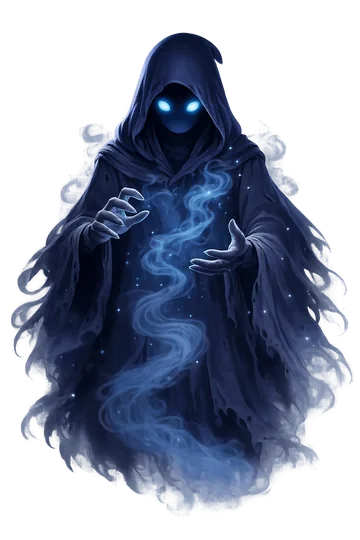
Los astros dicen síDesde el inicio
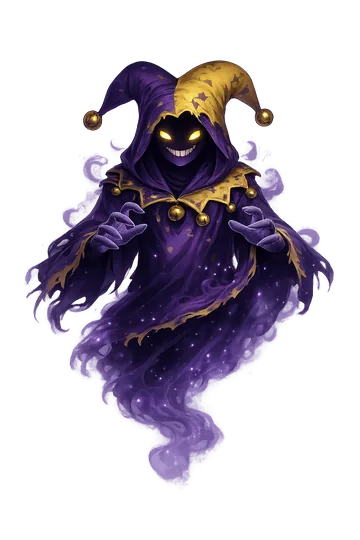
¡Obvio microbio!50 cartas
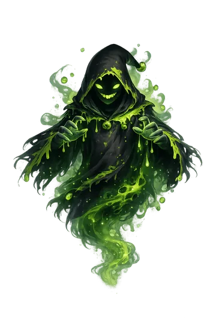
Si eso te hace feliz…80 cartas
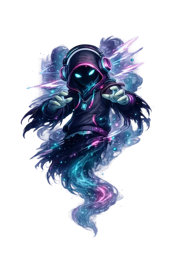
Slay!90 cartas
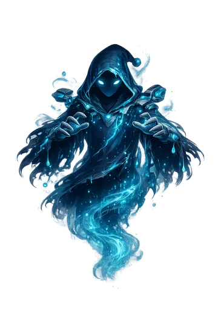
Probabilidad: 100%100 cartas
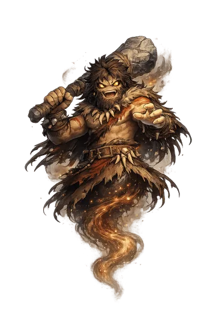
¡Grog gusta! (SÍ)110 cartas
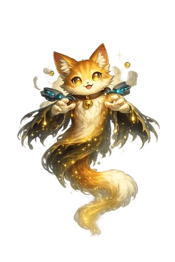
¿Tienes atún?120 cartas
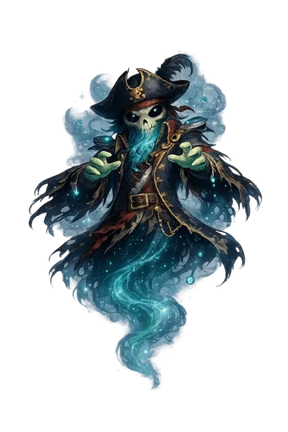
¡El mapa dice SÍ!140 cartas
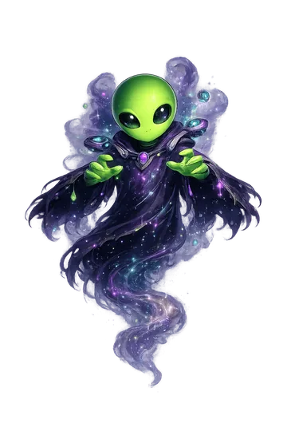
Proceda terrícola150 cartas
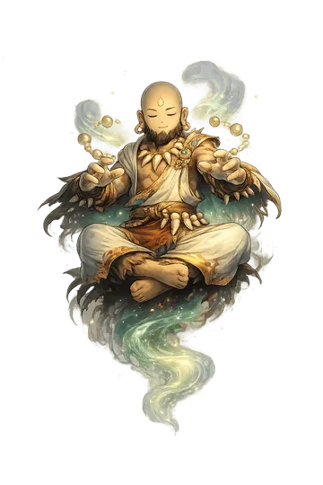
El río fluye a tu favor200 cartas
Personaliza
Además de los entes hay 10 bolas y 10 fondos. Combínalos como quieras: un pirata en la Atlántida con un Orbe Solar o un robot en Cyber City con su Núcleo IA.
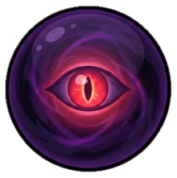

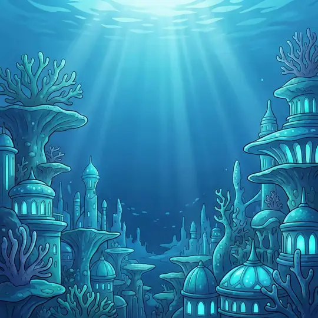
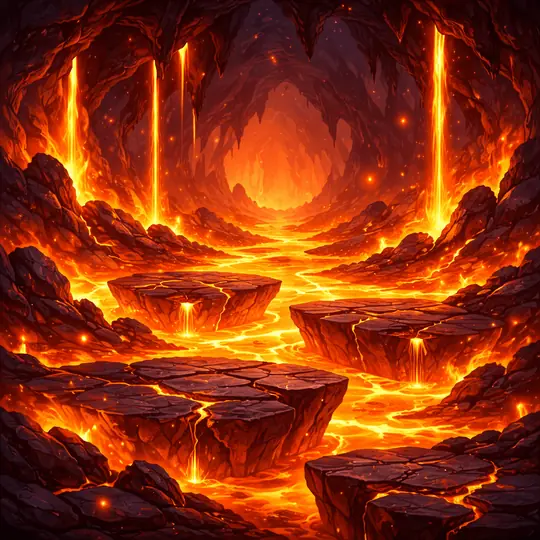
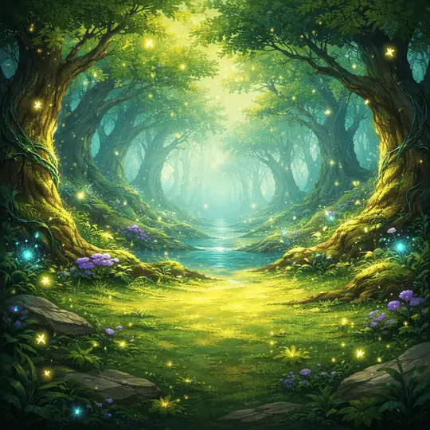
Bolas: Cristal Puro, Orbe Solar, Ojo Maldito, Gota del Mar, Plasma Neo, Esfera Dorada, Gaia, Agujero Negro, Núcleo IA y Corazón Latiente. Fondos: Santuario, Cosmos, Bosque Encantado, Inframundo, Puertas del Cielo, Cyber City, Dunas Eternas, Atlántida, Pixel Art y La Matrix.
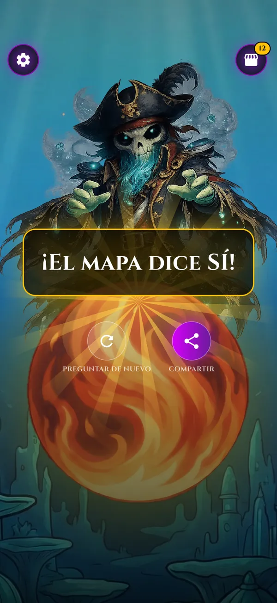
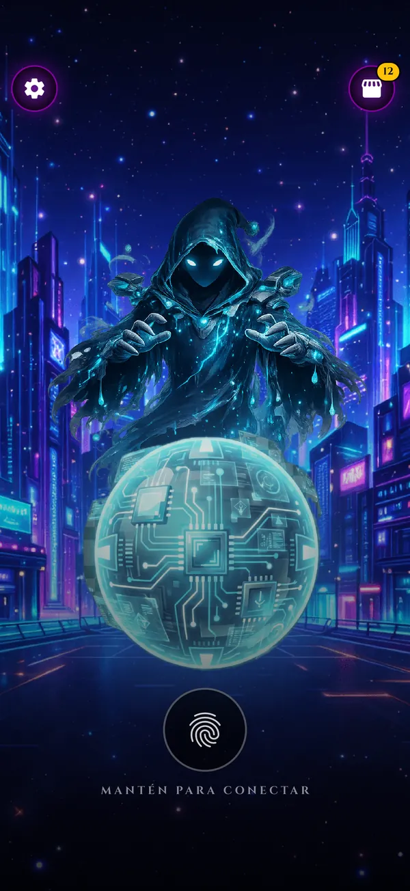
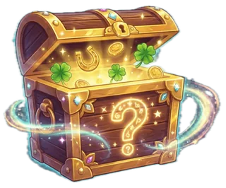
Cajas místicas
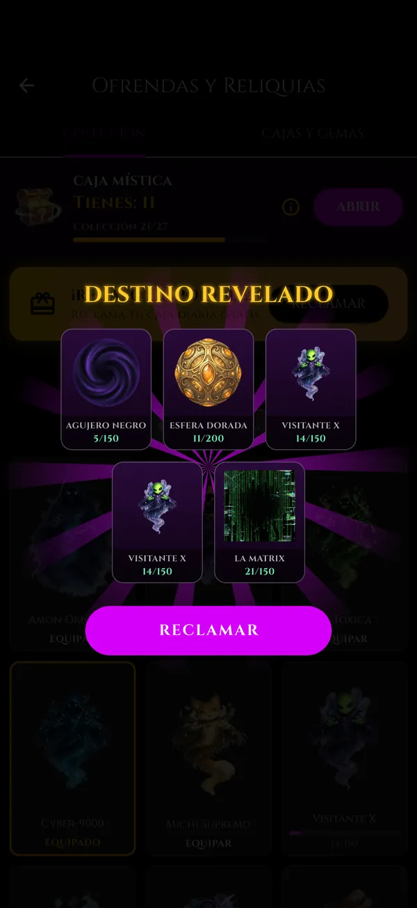
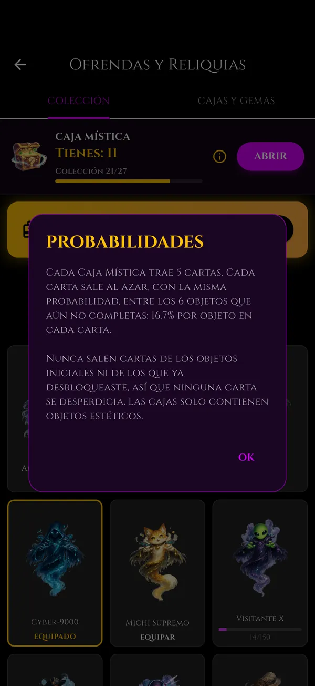
Visiones
Capturas reales del juego en iPhone.
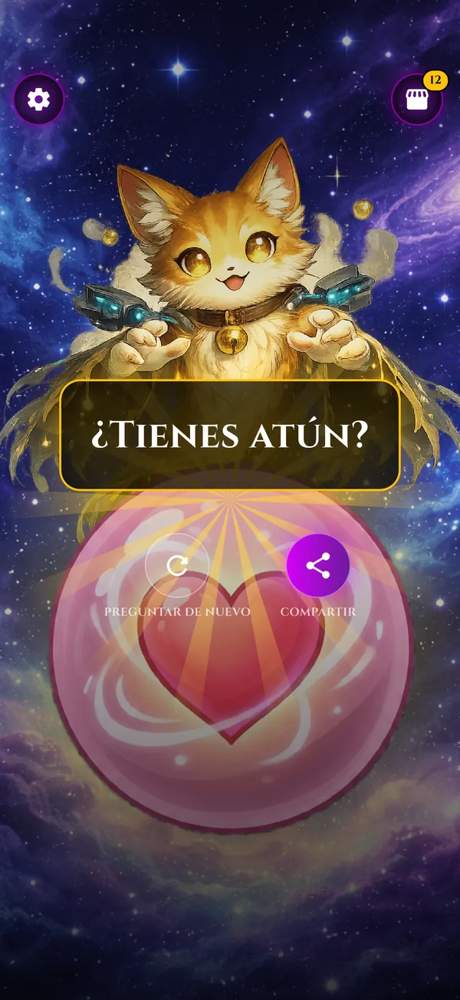

Preguntas
No. AMON es un juego de entretenimiento: las respuestas salen al azar de lo que dice cada ente. No lo uses para tomar decisiones importantes.
No. El micrófono solo se usa mientras mantienes la huella y el reconocimiento de voz de tu teléfono (Google en Android, Apple en iPhone) lo pasa a texto. AMON no guarda el audio; el texto solo vive en memoria para elegir la respuesta y, si tú quieres, aparecer en la imagen para compartir. Se borra al hacer otra pregunta o al cerrar la app.
AMON funciona igual: mantén la huella, piensa tu pregunta y suelta. El oráculo responde de todas formas.
Sí. Tiene anuncios y compras opcionales: paquetes de cajas místicas y una compra única para quitar los banners y los anuncios al abrir la app. Todo se puede conseguir gratis con la caja diaria y los videos.
Español, inglés, portugués, francés, alemán, ruso, indonesio, chino, japonés y coreano. Usa el idioma de tu teléfono.
No hay cuentas: tu progreso se guarda solo en tu teléfono. Los anuncios, las compras y, según el teléfono, el reconocimiento de voz necesitan conexión.
Muy pronto en App Store. Hoy está disponible en Google Play para Android 7.0 o posterior.
Descarga AMON y deja que el oráculo hable.